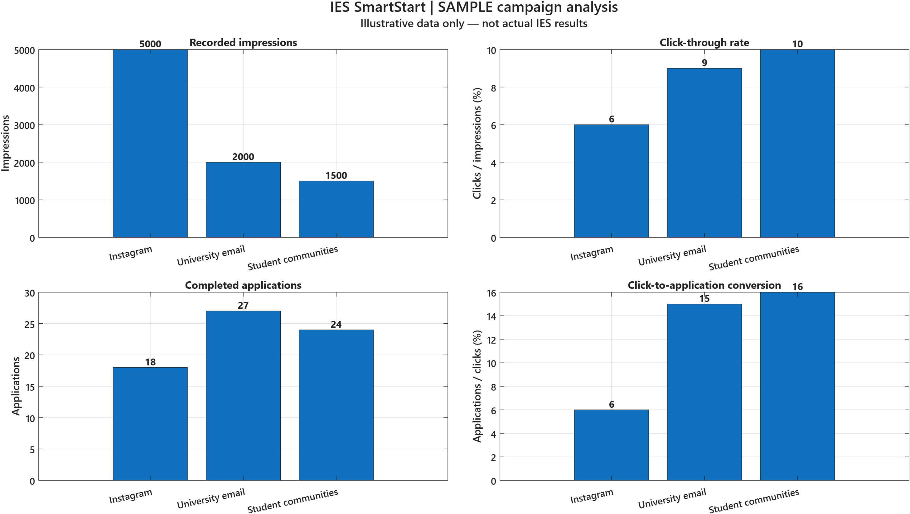

01
Explore
Discover an international academic environment and broaden your perspective.
Discover the International Excellence Scholarship, explore what you can contribute and find your next step.
Independent student prototype · Not an official IES website
The International Excellence Scholarship combines university study in Germany with community engagement at Copernicus Berlin.

Discover an international academic environment and broaden your perspective.
Become part of a community with different academic, professional and cultural backgrounds.
Share your knowledge, skills, ideas, creativity and commitment.
IES goes beyond a traditional exchange semester. Community engagement is an integral part of the programme.
— Summary of the IES Skills Challenge briefThere are many ways to participate in an international community.
Different backgrounds.
Different strengths.
One shared community.
A short orientation tool to help you reflect on your interests and possible contribution.
This self-check is an orientation tool. It does not determine official IES eligibility.
Answers and language are saved only in this browser when storage is available. “Start again” clears your self-check answers.
Get a starting point for your questions about IES and your possible contribution.
This prototype uses prewritten FAQ responses and browser-only storage. The same safeguards would matter in any future AI version.
A future AI version could provide outdated or inaccurate programme information.
A future AI version could present suggestions as if they were official requirements.
Applicants may accidentally share unnecessary personal information.
Illustrative data only — not actual IES campaign results.

In this sample, Instagram generates the most impressions (5,000), university email produces the most completed applications (27), and student communities achieve the highest click-to-application conversion (16%).
More impressions do not necessarily lead to more applications. A recruitment team should compare both application volume and conversion rates when evaluating communication channels.
These illustrative results do not establish real channel performance. Campaign costs and applicant suitability would also be needed before making budget decisions.